98 simple 2D icons. SVG currentColor master + WAFO gold fixed version. Color: #B88A44.
wafo-15-simple-001佛教本體與佛牌形制wafo-15-simple-002佛教本體與佛牌形制wafo-15-simple-003佛教本體與佛牌形制wafo-15-simple-004佛教本體與佛牌形制wafo-15-simple-005佛教本體與佛牌形制wafo-15-simple-006佛教本體與佛牌形制wafo-15-simple-007佛教本體與佛牌形制wafo-15-simple-008佛教本體與佛牌形制wafo-15-simple-009佛教本體與佛牌形制wafo-15-simple-010佛教本體與佛牌形制wafo-15-simple-011佛教本體與佛牌形制wafo-15-simple-012佛教本體與佛牌形制wafo-15-simple-013佛教本體與佛牌形制wafo-15-simple-014佛教本體與佛牌形制wafo-15-simple-015佛教本體與佛牌形制wafo-15-simple-016佛教本體與佛牌形制wafo-15-simple-017法會供奉與儀式用品wafo-15-simple-018法會供奉與儀式用品wafo-15-simple-019法會供奉與儀式用品wafo-15-simple-020法會供奉與儀式用品wafo-15-simple-021法會供奉與儀式用品wafo-15-simple-022法會供奉與儀式用品wafo-15-simple-023法會供奉與儀式用品wafo-15-simple-024法會供奉與儀式用品wafo-15-simple-025法會供奉與儀式用品wafo-15-simple-026法會供奉與儀式用品wafo-15-simple-027法會供奉與儀式用品wafo-15-simple-028法會供奉與儀式用品wafo-15-simple-029法會供奉與儀式用品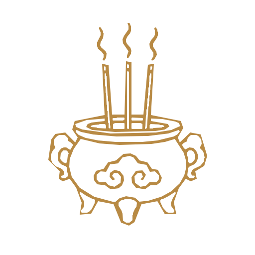
wafo-15-simple-030法會供奉與儀式用品wafo-15-simple-031商品配件與容器展示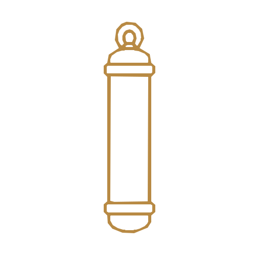
wafo-15-simple-032商品配件與容器展示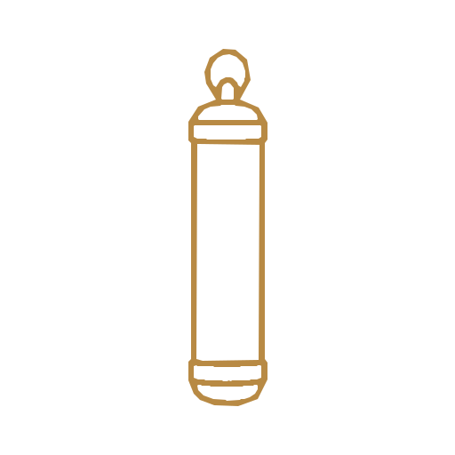
wafo-15-simple-033商品配件與容器展示wafo-15-simple-034商品配件與容器展示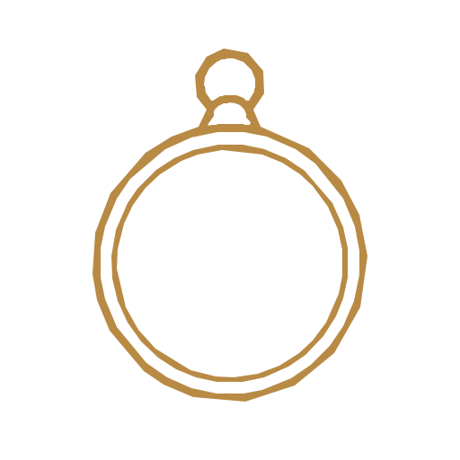
wafo-15-simple-035商品配件與容器展示wafo-15-simple-036商品配件與容器展示wafo-15-simple-037商品配件與容器展示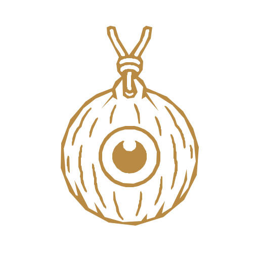
wafo-15-simple-038商品配件與容器展示wafo-15-simple-039商品配件與容器展示wafo-15-simple-040商品配件與容器展示wafo-15-simple-041商品配件與容器展示wafo-15-simple-042商品配件與容器展示wafo-15-simple-043商品配件與容器展示wafo-15-simple-044商品配件與容器展示wafo-15-simple-045商品配件與容器展示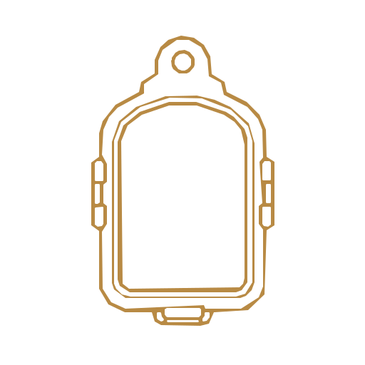
wafo-15-simple-046商品配件與容器展示wafo-15-simple-047商品配件與容器展示wafo-15-simple-048商品配件與容器展示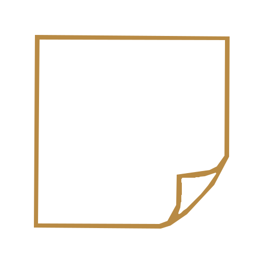
wafo-15-simple-049商品配件與容器展示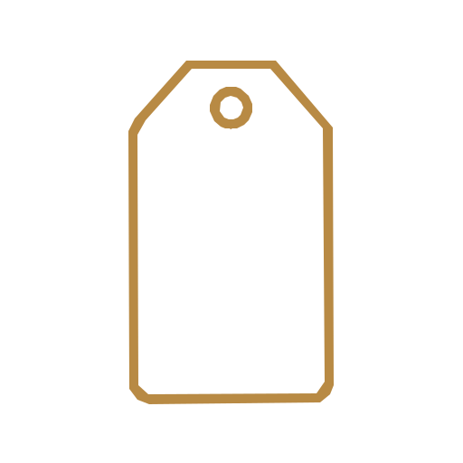
wafo-15-simple-050商品配件與容器展示wafo-15-simple-051符咒符管與符布法刺wafo-15-simple-052符咒符管與符布法刺wafo-15-simple-053符咒符管與符布法刺wafo-15-simple-054符咒符管與符布法刺wafo-15-simple-055符咒符管與符布法刺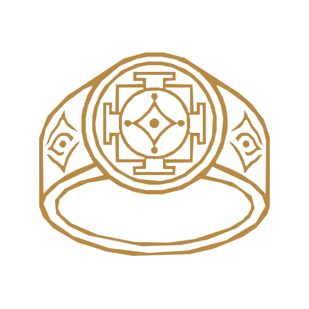
wafo-15-simple-056符咒符管與符布法刺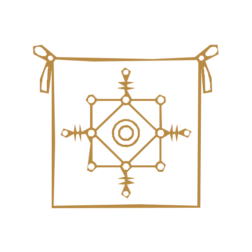
wafo-15-simple-057符咒符管與符布法刺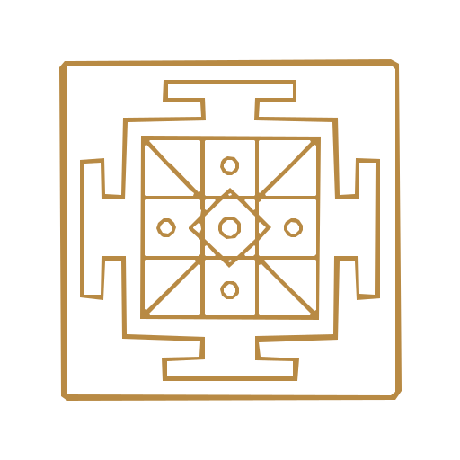
wafo-15-simple-058符咒符管與符布法刺wafo-15-simple-059符咒符管與符布法刺wafo-15-simple-060符咒符管與符布法刺wafo-15-simple-061符咒符管與符布法刺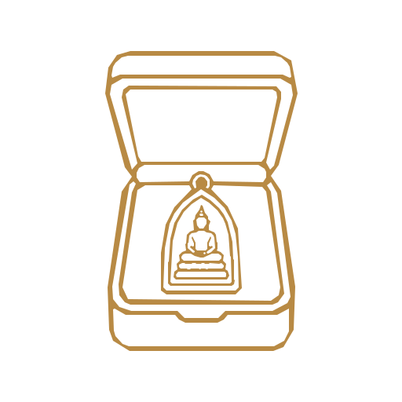
wafo-15-simple-062符咒符管與符布法刺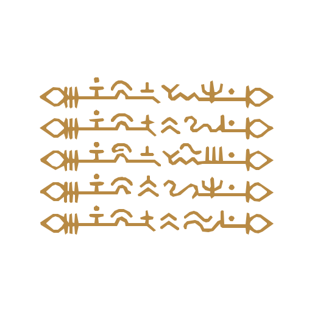
wafo-15-simple-063符咒符管與符布法刺wafo-15-simple-064符咒符管與符布法刺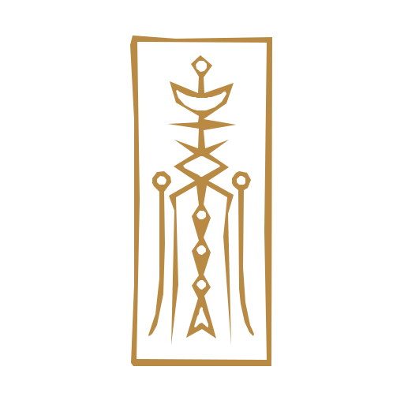
wafo-15-simple-065符咒符管與符布法刺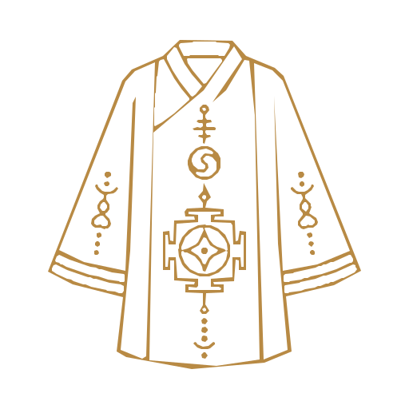
wafo-15-simple-066符咒符管與符布法刺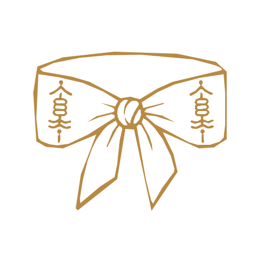
wafo-15-simple-067符咒符管與符布法刺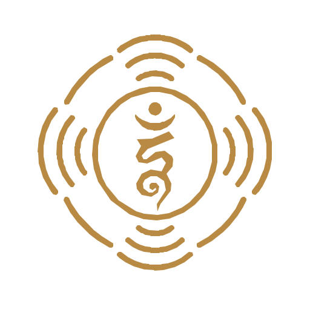
wafo-15-simple-068符咒符管與符布法刺wafo-15-simple-069符咒符管與符布法刺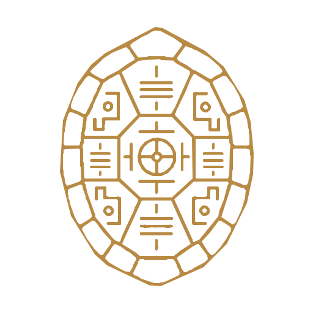
wafo-15-simple-070符咒符管與符布法刺wafo-15-simple-071動物型護符與獸形法物wafo-15-simple-072動物型護符與獸形法物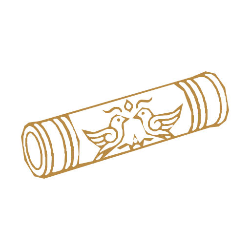
wafo-15-simple-073動物型護符與獸形法物wafo-15-simple-074動物型護符與獸形法物wafo-15-simple-075動物型護符與獸形法物wafo-15-simple-076動物型護符與獸形法物wafo-15-simple-077動物型護符與獸形法物wafo-15-simple-078動物型護符與獸形法物wafo-15-simple-079動物型護符與獸形法物wafo-15-simple-080動物型護符與獸形法物wafo-15-simple-081動物型護符與獸形法物wafo-15-simple-082動物型護符與獸形法物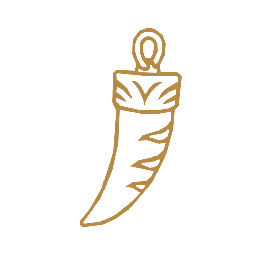
wafo-15-simple-083動物型護符與獸形法物wafo-15-simple-084動物型護符與獸形法物wafo-15-simple-085動物型護符與獸形法物wafo-15-simple-086動物型護符與獸形法物wafo-15-simple-087動物型護符與獸形法物wafo-15-simple-088天神護法與神祇wafo-15-simple-089天神護法與神祇wafo-15-simple-090天神護法與神祇wafo-15-simple-091天神護法與神祇wafo-15-simple-092天神護法與神祇wafo-15-simple-093天神護法與神祇wafo-15-simple-094天神護法與神祇wafo-15-simple-095天神護法與神祇wafo-15-simple-096天神護法與神祇wafo-15-simple-097天神護法與神祇wafo-15-simple-098天神護法與神祇